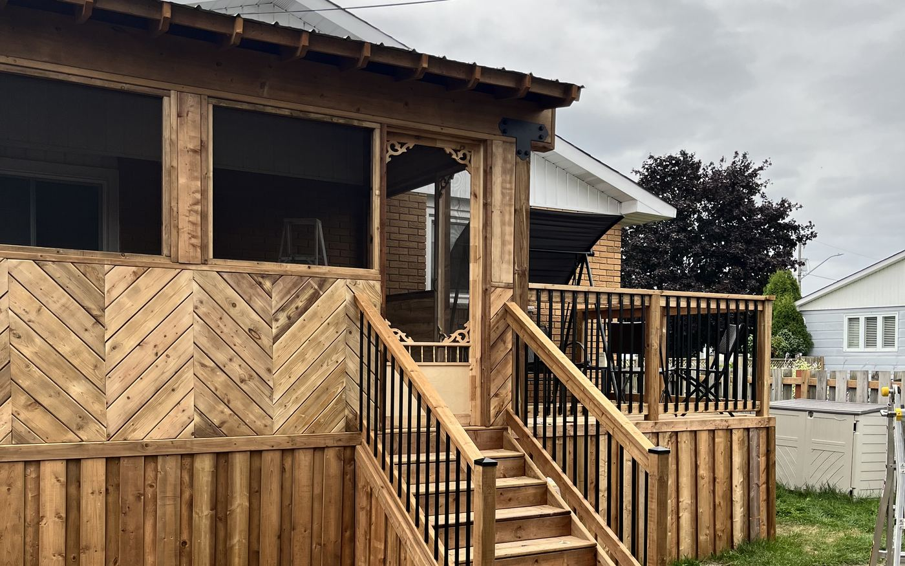

Deck building
Deck Builders in Cornwall, Ontario
Pressure-treated, cedar and composite decks engineered for Eastern Ontario frost — footings dug to the depth the City requires, not the depth that is quick.
A deck in this part of Ontario has to survive a 30-degree summer afternoon and a −30 January night, and it is the freeze-thaw cycle that kills them. When footings are not below the frost line, the ground lifts them every spring. Two or three winters later the ledger is racked, the stairs no longer meet the landing, and the guard has gone loose.
That is the single most common failure we get called to fix, and it is entirely avoidable. We dig every footing to the depth the City of Cornwall Building Division requires for our area, pour proper concrete pads rather than dropping blocks on sod, and flash the ledger so water is directed away from your rim joist instead of into it.

Scope of work
What a deck build includes
Design and layout
We measure on site, check your setbacks and lot coverage, and lay the deck out around how you actually use the yard — where the sun lands at 6pm, where the barbecue goes, where the door swings.
Permit drawings and application
If your deck needs a permit we prepare the drawings and file the application with the City. You are not left figuring out framing plans and site plans on your own.
Footings below frost
Concrete footings sized and poured to Code, dug to the depth required for Eastern Ontario. This is the part nobody sees and the only part that determines whether the deck is still square in ten years.
Framing, decking and stairs
No.2 grade or better framing lumber, joists at the spacing your decking product calls for, hidden fasteners on composite, and stairs with consistent rise and run — uneven treads are both a Code problem and a trip hazard.
Guards and railings
Built to the Code height with the required maximum opening between balusters, so the deck passes inspection and is safe for kids and dogs.
Cleanup and final inspection
Site cleared, offcuts and packaging removed, and we meet the inspector so you do not have to book a day off work.
Options
Decking materials, and what we would actually tell you
There is no single right answer here. The honest version of the trade-off looks like this:
Pressure-treated
The lowest up-front cost and still the most common deck in Cornwall. It will need cleaning and re-sealing every two to three years, and boards will cup or check over time. Choose it if budget is the deciding factor and you do not mind the maintenance weekend.
- Lowest material cost
- Widely available locally
- Needs regular sealing
Cedar
Naturally rot-resistant, noticeably nicer underfoot and it smells like a deck should. Softer than pressure-treated, so it marks more easily. Left unfinished it weathers to silver-grey; sealed, it holds its colour.
- Warm appearance
- Naturally rot-resistant
- Softer surface, marks easier
Composite and PVC
The highest up-front cost and the lowest ongoing one — no sanding, no staining, and it will not splinter. Worth doing properly: composite needs the joist spacing the manufacturer specifies, and picture-frame edges need blocking. Done wrong it sags between joists and the warranty is void.
- No staining or sealing
- 25–50 year product warranties common
- Requires correct joist spacing
Do you need a permit for a deck in Cornwall?
Under the City of Cornwall’s deck guidelines, a deck more than 60 cm above grade requires a building permit. A deck at or near grade that is freestanding — not attached to the house — generally does not. Permit fees typically run in the $198–$600 range depending on size.
Guards are required once you are more than 60 cm up, at a minimum height of 1.07 m, with openings no greater than 100 mm. Zoning by-laws also cap how much of your lot can be covered; going over means a minor variance from the Committee of Adjustment.
We confirm the current requirements and fee schedule with the Building Division at (613) 930-2787 on every job, and we file the application for you. Rules do change — check the City’s current deck guide before relying on these figures.
Service areas
Decks across Cornwall & SD&G
Based in Cornwall and working across Stormont, Dundas and Glengarry. If your town is not listed, call us anyway — we travel.
FAQ
Decks: common questions
Do I need a building permit to build a deck in Cornwall?
If the deck surface sits more than 60 cm above the ground, yes. A freestanding deck at or near grade that is not attached to the house generally does not need one. Fees usually fall between $198 and $600 depending on the size of the structure. We prepare the drawings and file the application as part of the job, and we confirm the current thresholds with the City's Building Division before quoting, because by-laws change.
How deep do deck footings have to go in Cornwall?
Below the local frost line, which in Eastern Ontario is deeper than the 1.2 m figure often quoted for southern Ontario. We confirm the required depth with the City for your specific address rather than working from a rule of thumb. Footings also have a minimum size and thickness under the Ontario Building Code, and the concrete has a minimum strength. Skipping any of this is why decks heave.
What does a new deck cost?
It depends on four things: total square footage, height off the ground, the decking material, and how much railing and stair work is involved. Height matters more than people expect — a second-storey deck needs deeper footings, taller posts, more bracing and a longer stair run, so it can cost substantially more per square foot than a ground-level deck of the same size. We quote in writing and itemised, so you can see exactly what is driving the number.
Composite or pressure-treated — which should I choose?
If you want the lowest up-front cost, pressure-treated. If you want to stop staining decks on summer weekends, composite. Composite costs more to install as well as to buy, because it needs tighter joist spacing and blocking at picture-frame edges, but most product warranties run 25 to 50 years. Cedar sits in the middle and looks the best of the three when it is new.
Can you repair or resurface my existing deck instead of replacing it?
Often, yes — and it is worth asking. If the footings and framing are sound, replacing just the decking boards and railings costs far less than a full rebuild. What we check first is the ledger connection, the footings, and the joists at the ends where water sits. If the frame has moved or the ledger was never flashed, resurfacing is money spent on a structure that is already failing.
Free quote
Get a free quote for your deck project
Tell us what you are planning. We reply to every inquiry, usually within one business day.
Services
Other things we do
Fence installation
Privacy, picket, PVC, aluminum and chain link — set deep, set straight, set square.
Read more 03Siding installation
Vinyl, engineered wood and board-and-batten, with soffit, fascia and eavestrough.
Read more 04Window replacement
ENERGY STAR windows and doors installed to spec, air-sealed and properly flashed.
Read more 05Bathroom renovations
Full gut-and-rebuild bathrooms, tub-to-shower conversions and accessible walk-ins.
Read more 06Kitchen renovations
Layout changes, custom cabinetry, islands and finish carpentry done by one crew.
Read morePrefer to talk it through first?
Call us and describe what you are dealing with. We will tell you honestly whether it is a job worth doing now.